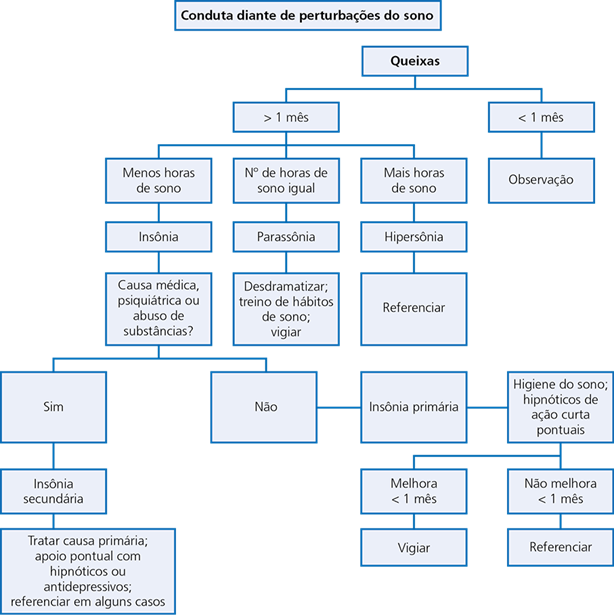

O diagnóstico das perturbações do sono é fundamentalmente clínico, focado na história do padrão de vigília-sono e no impacto funcional diário.
| Categoria | Patologias e Características |
|---|---|
| Insônias |
• De Ajuste (Aguda): Associada a estressor identificável; duração curta. • Psicofisiológica: Ansiedade antecipatória e condicionamento negativo para o sono. • Paradoxal (Pseudo-insônia): Relato de insônia grave sem evidência fisiológica. |
| Hipersonias |
• Narcolepsia: Sonolência excessiva, cataplexia, paralisia do sono e alucinações. • Síndrome Kleine-Levin: Episódios recorrentes com hiperfagia e hipersexualidade. |
| Ritmo Circadiano |
• Atraso de Fase: Sono tardio (comum em jovens). • Avanço de Fase: Sono muito precoce (comum em idosos). • Trabalho por Turnos / Jet Lag: Desajuste ambiental-biológico. |
| Parassonias |
• NREM: Sonambulismo e terrores noturnos (início da noite; amnésia). • REM: Pesadelos vívidos e transtorno comportamental (fim da noite). |
| Movimento | Pernas Inquietas (SPI): Desejo de mover as pernas, piora no repouso e à noite. |
As medidas de higiene do sono são a primeira linha de intervenção e visam estabilizar o marcapasso circadiano.
A farmacoterapia deve ser limitada ao curto prazo (2-4 semanas) para evitar tolerância e dependência.
| Classe | Medicação | Dose Sugerida | Indicação / Esquema |
|---|---|---|---|
| Benzodiazepínicos | Diazepam SUS | 5 - 10 mg (Noite) | Insônia aguda/situacional com ansiedade. |
| Clonazepam SUS | 0,5 - 2 mg (Noite) | Eficaz em parassonias e pernas inquietas. | |
| Hipnóticos (Z) | Zolpidem | 5 - 10 mg (Imediato) | Indutor de sono; tomar já deitado na cama. |
| Zopiclona | 7,5 mg (Noite) | Melhor para manutenção (meia-vida mais longa). | |
| Antidepressivos | Amitriptilina SUS | 12,5 - 25 mg (Noite) | Doses baixas para insônia crônica com dor. |
| Trazodona | 50 - 100 mg (Noite) | Perfil sedativo seguro para idosos. | |
| Hormonal | Melatonina | 2 - 5 mg (2h antes) | Jet lag e distúrbios de ritmo circadiano. |
